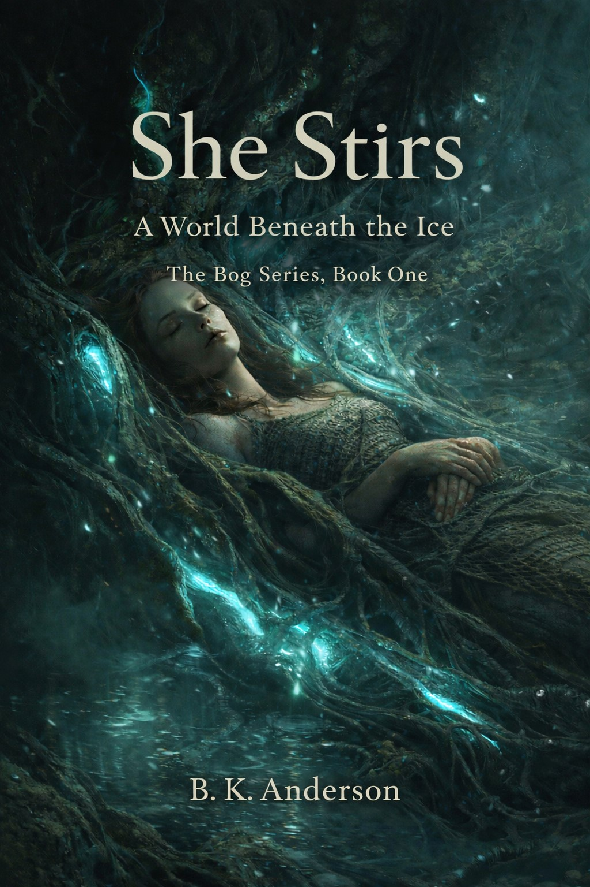

🌳 The Anderson Family Series Legacy through lineage The Anderson Family Legacy Family history volumes View Series
🌅 Path of Light Series Personal awakening journey Path of Light Memoir & spiritual reflections View Series
🌌 Anders Taft Series Conscious reflections Awakening in Silence B.K. Anderson & Anders Taft View Series
🌿 The Bog Series The awakening of living worlds  She Stirs • She Seeks • She Sows The beginning trilogy View Series
🪐 The Seven Bogs of Mars Seven-book restoration arc The Seven Bogs of Mars Seven-book epic series View Series